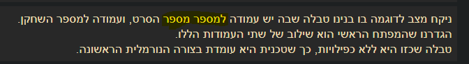

מחברת 4 תחת צורה נורמלית שנייה:

כתוב מספר מספר
עריכה:
{kind=link}
מגבילים את המידע

מחברת 3
והצעה:

החל מההסבר הראשון על מפתחות ועד ההסבר על קשר רבים לרבים כל שורה בטבלה מקבלת id ייחודי, ולא כל סרט כמו שמשתמע משם העמודה (movie_id)
שימו לב לכמות החזרות של English ו־Portuguese בעמודת original_language.
נוכל למנוע את החזרה על המחרוזת אם נוציא את הערכים ב־original_title לטבלה נפרדת,
וניצור קשר של יחיד לרבים בין טבלת השפות החדשה לטבלת הסרטים.
יoriginal_title צריך להיות original_language
מזכיר למחוק את name כforeign key מטבלת languages במחברת 4
תחת “GROUP BY על יותר מעמודה אחת”
כמו כן
אם לא היה אף סרט שקיבל דירוג מסוים בשנה מסוימת, אל תציגו את הדירוג הזה באותה שנה.
השתמשו ביצירתיות שלכם – הפתרון פשוט, אבל לא למדנו את הטכניקה הזו והיא דורשת מעט אינטואיציה
אני קצת מבולבלת מהכוונה פה. בהתחלה חשבתי שצריך לעשות את החלק הראשון (שנה, דירוג וכמות סרטים מתאימים) ואז לעשות משהו נוסף (שעוד לא נלמד, נגיד שאילתה מקוננת) כדי לסנן שנים שאין בהם דירוגים מסוימים, אבל בפועל אין בזה טעם, אם לא היה אף סרט שקיבל דירוג מסוים בשנה מסוימת לא תהיה מוצגת רשומה באגרגציה (גם לא עם 0), לא יהיה מה לקבץ כדי לעשות לו רשומה. אז יכול להיות שפשוט צריך ניסוח אחר לשורות האלו או למחוק אותן לגמרי כדי שלא יבלבלו.
יום 5 - CROSS JOIN
לפי התוצאות המודגמות במחברת, אני מניחה שבשאילתה אמור להיות FROM drinks
ואז CROSS JOIN foods
{kind=link}
{kind=link}
{kind=link}